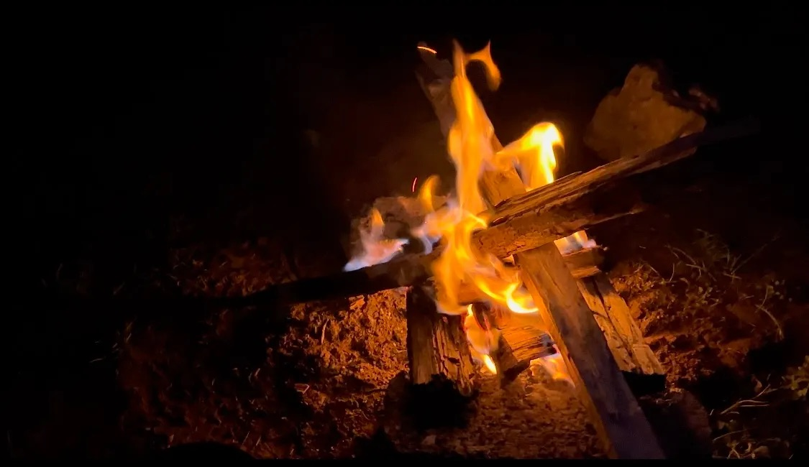
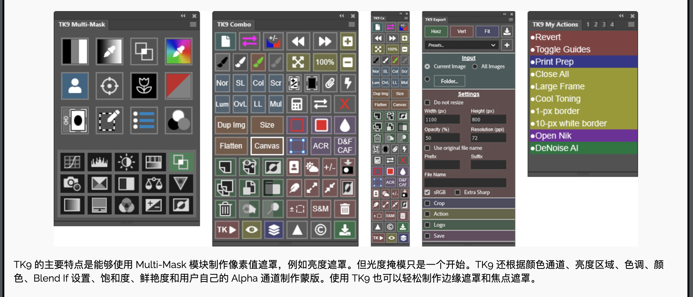
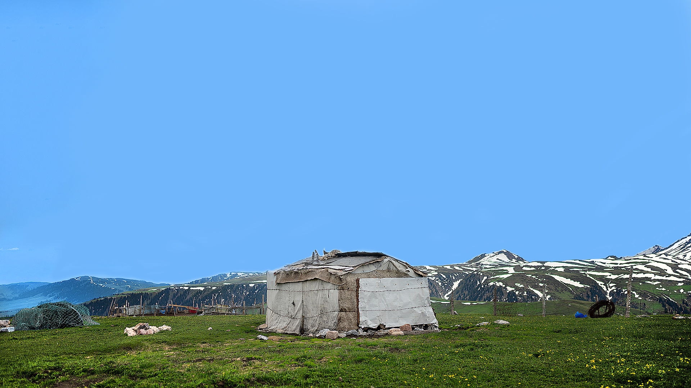
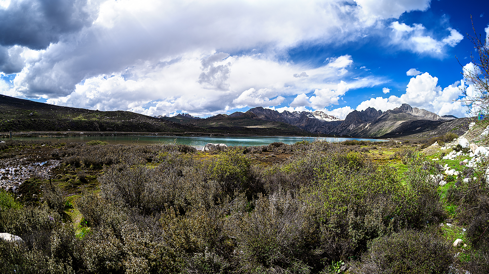
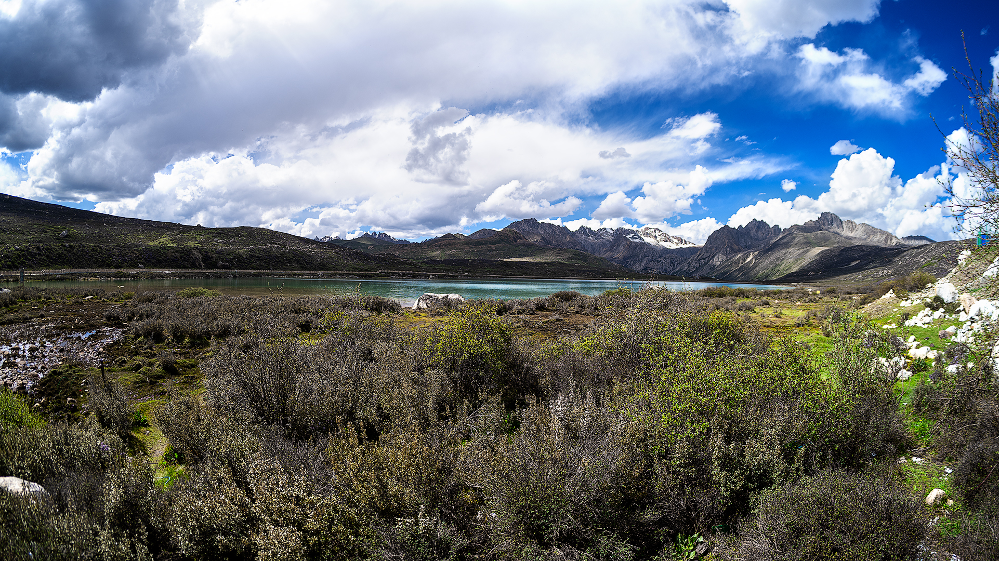
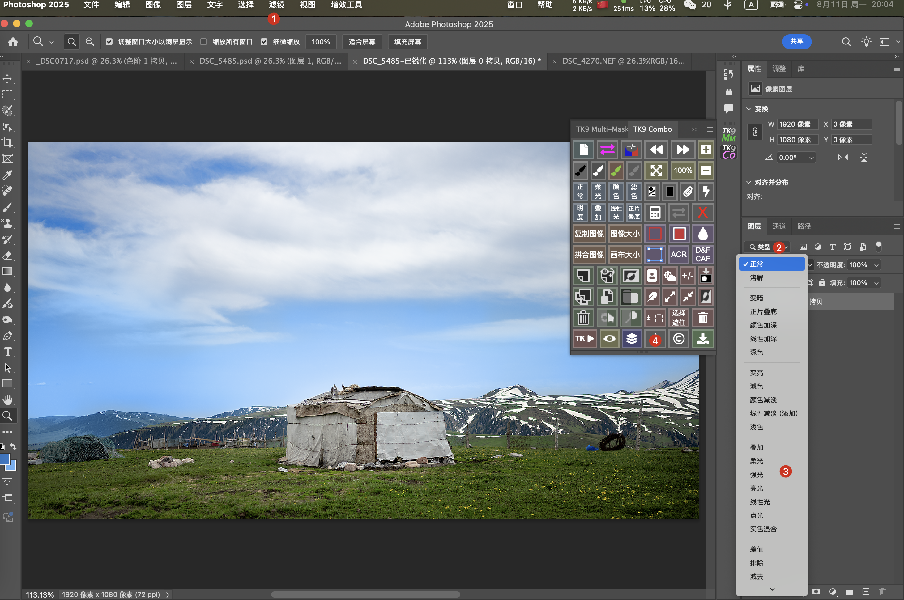
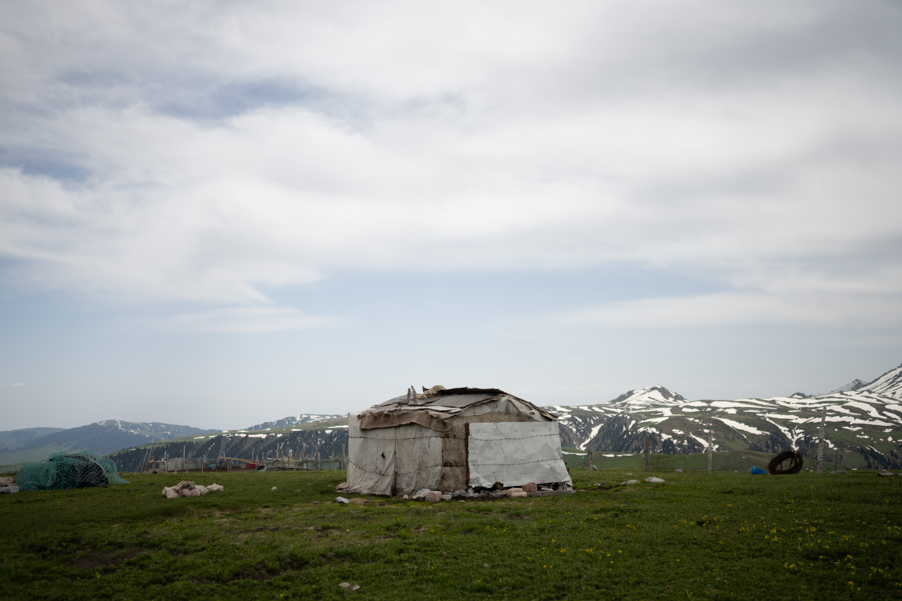
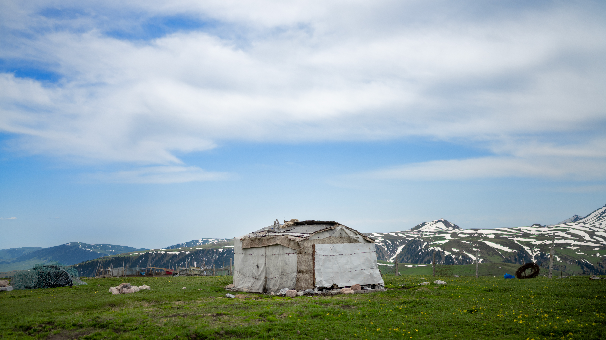
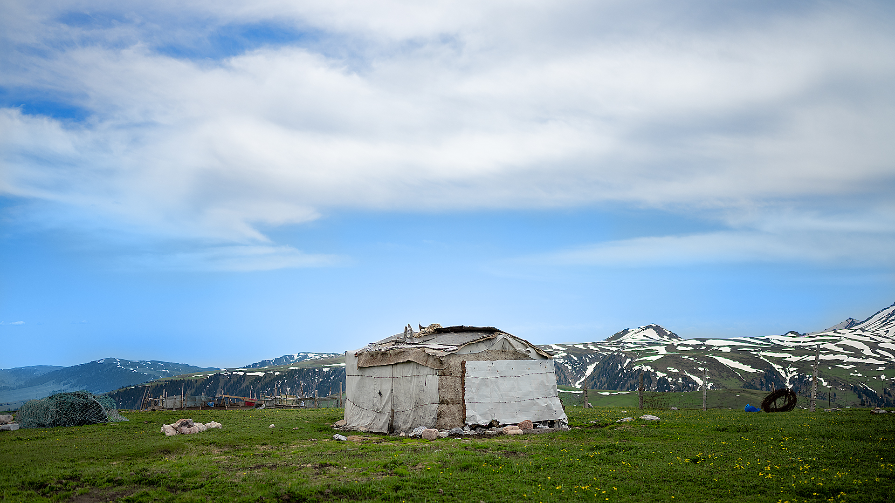
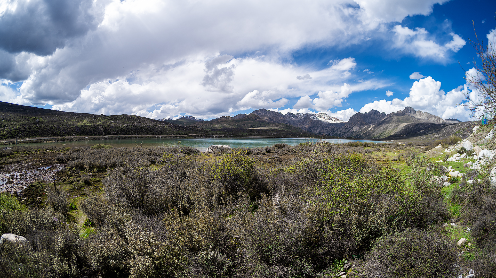

制作适用于web传播的多媒体（图片篇）

📑 目录
我发现我拍摄的很多照片在本地浏览时非常清晰，但上传到各大社交媒体平台后就变得模糊了，画质锐减。于是我查阅了很多资料，从@摄影师姚明来 那里找到一种方法，可以有效缓解这种现象。简单来说就是后期时针对性地进行锐化，导出时使用平台推荐的内容技术标准。
之所以上传社交媒体平台后就会变得模糊，是因为（几乎所有）平台会对用户上载的多媒体内容进行二次处理，一是因为平台节省服务器的储存容量，二是可以节省带宽和成本。对此，作为用户我们只能尽量压缩文件大小，并查阅社媒平台的技术标准文档中推荐的规格，尽量让照片与推荐规格保持一致，以减少平台二次处理、重新封装带来的影响。
主流社媒平台的技术标准文档与推荐规格可以查阅下方文章链接中的最后部份：https://www.lizhongping.eu.org/article/workofgarmin
具体来讲，就是将文件体积做小，质量再尽量做低一些，尺寸和分辨率压缩到平台推荐的程度。导出时再将文件格式和技术标准（色彩空间、格式等）设置为平台技术标准文档推荐的规格，以减小平台重新封装时的影响。

 以这组图片为例，分辨率8256 × 5504px、文件体积9MB，远远高于各个平台的标准。
第一步：
进行常规的后期步骤。
以这组图片为例，分辨率8256 × 5504px、文件体积9MB，远远高于各个平台的标准。
第一步：
进行常规的后期步骤。


工具：
1、Photoshop 2、TK9 combo插件(tony kuyper photo):https://goodlight.us/
流程：
以这组图片为例，分辨率8256 × 5504px、文件体积9MB，远远高于各个平台的标准。
第一步：
进行常规的后期步骤。

第二步： 复制一个图层，滤镜-其他-高反差保留-数值1-3根据情况而定；然后在图层面板中根据想要的效果选择柔光、强光、亮光或者线性光。柔光几乎适合所有情况，不过一些需要深度锐化的照片其他选项效果会更好。在折叠列表中做了对比，差距其实挺明显的。


第三步： tk9 combo中点击三角形图标，然后设置分辨率为推荐的1080x1920px，或者1920x1080px，不透明度50%，分辨率72ppi
第四步： 导出，文件封装为jpg格式，勾选转换为sRGB两组图片的原图、后期后无锐化、后期后锐化对比：
第一组：


第二组：